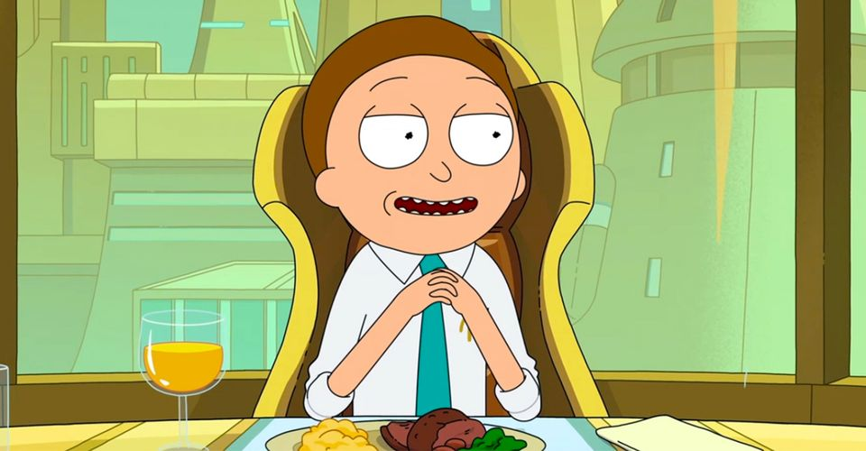

Project 1: GreenTrip Planner
If individuals are able to quantify the time vs. money vs. CO2 relationship of different methods of transit, then individuals will be able to make better informed decisions about what to prioritize for different trips. This application is the first step in accomplishing that initiave.
Project 2
Brief description
Project 3
Brief description
Project 4
Brief description